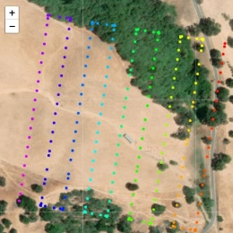
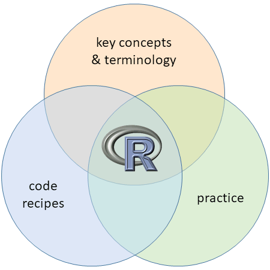

Spatial Data Analysis
with R
BayGeo, Spring
2023
Introduction Part 1 
Introduction Part 1

Home range constructor and spatial-temporal pattern analysis for wildlife tracking data
http://tlocoh.r-forge.r-project.org/

Data management utilities for drone mapping.
https://ucanr-igis.github.io/uasimg/

Catalogs and manages drone images (sample)
Estimates footprints, computes overlap, explorts flight area to Shapefile
Creates World Files for single images

Bring climate data from Cal-Adapt into R using the API
https://ucanr-igis.github.io/caladaptr/
Chill Portions Under Climate Change Calculator
https://ucanr-igis.shinyapps.io/chill/
Drone Mission Planner for Reforestation Monitoring Protocol
https://ucanr-igis.shinyapps.io/uav_stocking_survey/
Stock Pond Volume Calculator
https://ucanr-igis.shinyapps.io/PondCalc/
Pistachio Nut Growth Calculator https://ucanr-igis.shinyapps.io/pist_gdd/

foundational concepts
+ code recipes
+ working examples
+ practice
+ a good search engine
functional pRoficiency!